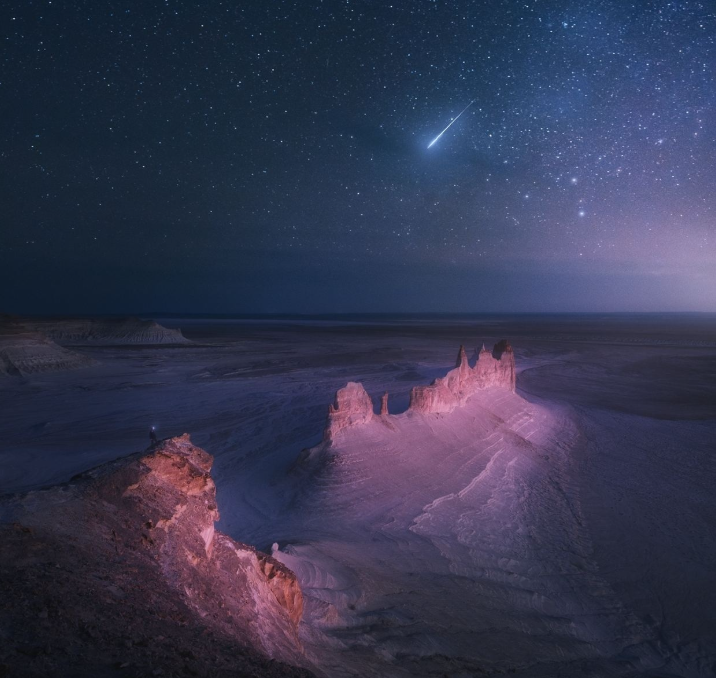

Boszhira Canyon — a breathtaking landscape of Mangystau
Boszhira is a natural site on the Ustyurt Plateau, known for its otherworldly appearance. White rocks, sharp peaks, and endless expanses make it one of the most photogenic places in Kazakhstan.
- Terrain: limestone karst valley
- Cliff height: up to 200 meters
- Highlights: "Fangs"-shaped peaks, sunset views
- Location: 300 km from Aktau
What to do?
- 🕠Camping under the open sky
- 📷 Photo expeditions and drone shooting
- 🚙 Jeep tours
- 🌌 Stargazing
How to get there?
📠Ustyurt Plateau, Mangystau Region
🚗 Only by off-road vehicle (guided tour recommended)
📅 Best time — spring and autumn
Boszhira is an indescribable scene. A perfect destination for adventurers, photographers, and nature lovers.
PHOTOS

